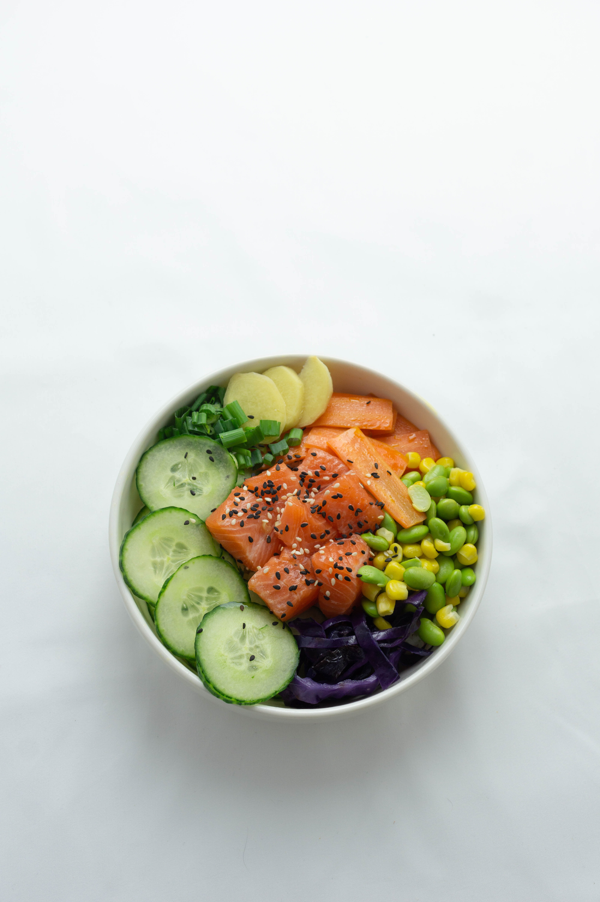

We can see today's technology is getting more advanced. People can order any food anywhere and anytime, leaving them the confusion in what food to pick among the wide variety available. There are also groups of people who needs help in picking the right food, such as people who have allergic to certain food and people who are having a healthy diet.
With the Food Picker, we can help you provide food recommendations according to the foods you like and pay attention to your allergies. You don't need to be confused about what food to eat today or tomorrow. We believe that our application can help and simplify your life in terms of eating.
For those of you who want to diet, we can also provide you with dietary recommendations. This application can also be used for children who are in need of protein intake or parents who are taking care of their bodies so as not to increase cholesterol or sugar levels in their bodies.
